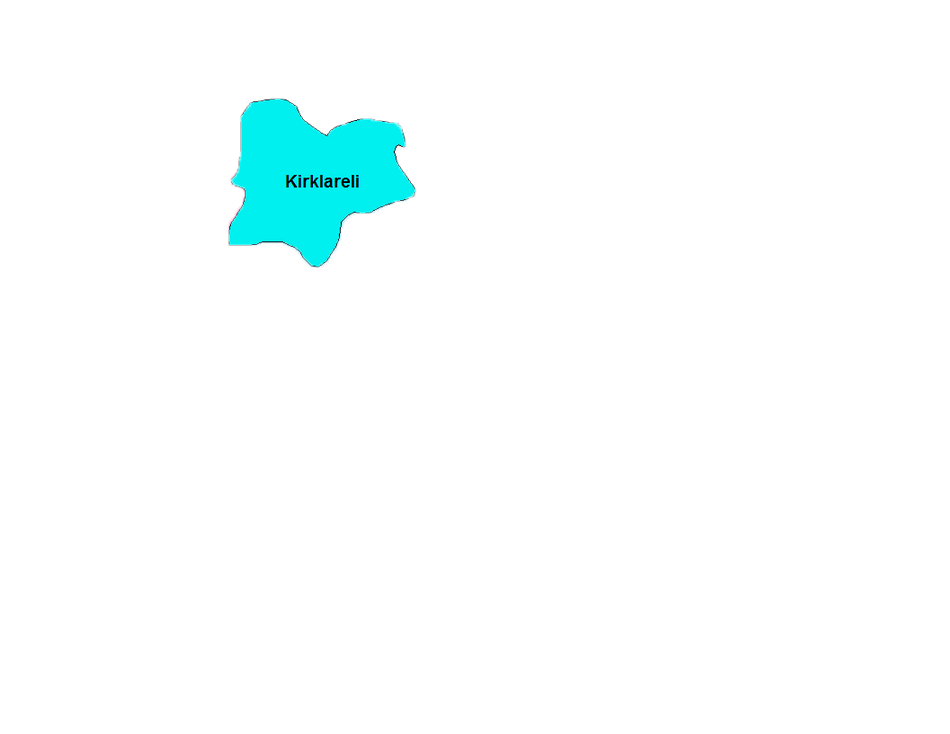
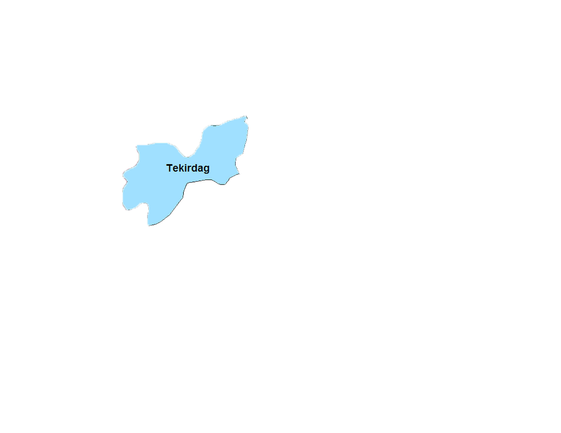
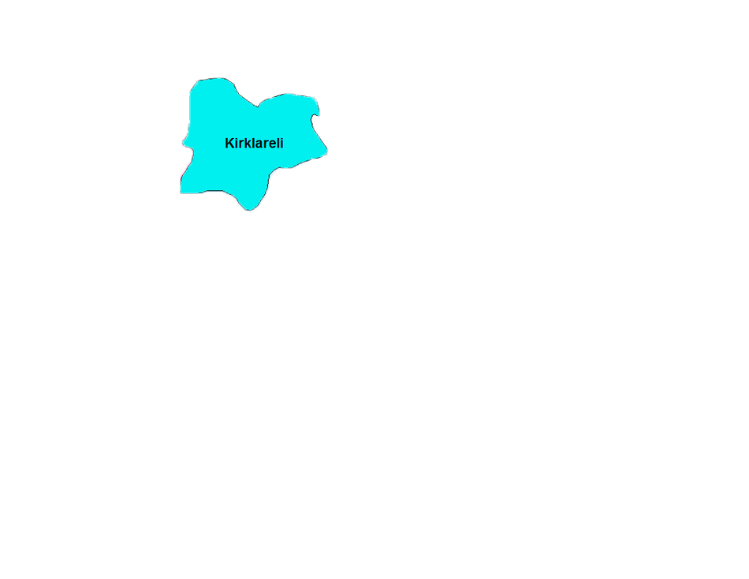
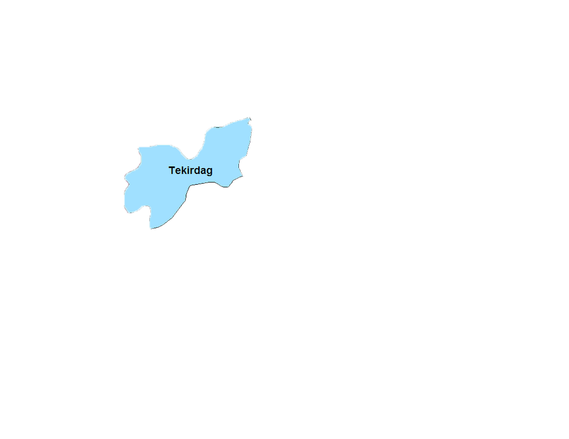

Marmara Bölgesi
Marmara Bölgesi'nin Önemli Yeryüzü Şekilleri
Coğrafi Konumu
Marmara Bölgesi ülkemizin kuzeybatı köşesinde yer alır. Ülke yüz ölçümünün %8,5'i ile altıncı büyük bölgemizdir. Yaklaşık olarak 66.000 km² alan kaplar. Karadeniz, Marmara ve Ege olmak üzere üç denize komşudur. İstanbul ve Çanakkale boğazları bu bölgede yer alır. Hem Asya, hem de Avrupa kıtasında yer alır.
Yeryüzü Şekilleri
Türkiye'nin ortalama yükseltisi en az olan bölgesidir. Marmara Bölgesi'nin en önemli yükseltisini, güneyde Samanlı Dağları, Trakya kesiminde Karadeniz boyunca uzanan Yıldız Dağları ve güneydeki Uludağ oluşturur. Bu dağlar orta yükseltidedir. Bölgenin en yüksek dağı ise 2543 metre ile Uludağ'dır. Bölgenin en önemli düzlükleri ise Trakya'daki Ergene Havzası, Anadolu yakasındaki Sakarya ve Bursa ovaları ile güneydeki geniş plato alanlarıdır.
Yer şekillerinin sade olması nedeniyle ulaşım kolaydır. Güney Marmara kıyıları girintili - çıkıntılıdır. Erdek, Bandırma, Gemlik ve İzmit körfezleri önemli girintilerdir.
Kapıdağ Yarımadası tombolo özelliği gösterir.
Kuzey kıyıları dik yalıyarlardan (falezler) meydana geldiği için bu kıyılarda fazla girinti – çıkıntı yoktur. Boğazlar, eski akarsu yataklarının daha sonra sular altında kalması ile oluşmuş ria tipi kıyı özelliği gösterir.
Toprak Özellikleri
Trakya’nın kuzeyinde, Kocaeli Yarımadası’nda, Güney Marmara’nın doğusu ve güneyinde, asitli, koyu renkli ve organik madde bakımından zengin topraklar bulunur. Ergene çayı havzası ile Güney Marmara Bölümü’ndeki ovalarda vertisol topraklar, Trakya’nın batısı Gelibolu ve Biga Yarımadası çevresinde ise rendzina adı verilen kireçli topraklar yer alır.
Akarsu ve Gölleri
Sakarya'nın aşağı kesimi,Meriç nehri, Susurluk ırmağı,başlıca akarsuları oluştururlar. Bölgenin yükseltisinin az olması, akarsuların akış hızını azaltır. Bu nedenle bölge akarsularının enerji potansiyeli azdır. Ayrıca akarsuların yatak derinliklerinin azlığı ve yüzey şekillerinin elverişli olmaması, baraj yapımını zorlaştırır. Bu nedenle Marmara Bölgesi'nin, hidroelektrik üretimindeki payı azdır.
Marmara Bölgesi'nin Anadolu yakasında yer alan akarsuları kıyıda delta oluşturamaz. Çünkü.Döküldükleri yerlerde kıyı akıntıları fazladır.
Yatak eğimlerinin az olmasına bağlı olarak taşıdıkları alüvyonların büyük bir bölümünü alçak kıyı ovalarında bırakmışlardır.
Bölgedeki Ulubat, İznik ve Sapanca gölleri tektonik kökenlidir. Büyük ve Küçük Çekmece ve Durusu (Terkos) gölleri ise kıyı set gölüne örnektir.
İklim ve Bitki Örtüsü
Marmara Bölgesi ikliminin en önemli özelliği bir geçiş iklimi karakteri göstermesidir. Bölgeye ortalama 600 - 700 mm yağış düşmektedir. Yıllık ortalama sıcaklığı ise 15-16 °C dir.
Trakya'da karasal iklim özellikleri görülür. Yıldız Dağları Karadeniz'in nemli havasının iç kısımlara girmesini engeller. Balkanlar üzerinden gelen nemli hava kütlesi, nemini Balkan Dağları'nda bıraktığından, Trakya'ya nemden yoksun ve kuru olarak eserler.
Balkanlar'dan gelen hava kütleleri Marmara Denizi üzerinden geçerken nem alır. Bu nemi Güney Marmara kıyılarına taşır. Dolayısıyla Güney Marmara'nın denizel iklime sahip olmasını sağlar.
Yıldız Dağları'nın Karadeniz kıyılarına bakan bölümü hariç Trakya'nın tabii bitki örtüsü bozkırdır.
Kocaeli platosunda bozulmuş Karadeniz iklimi görülür. Yazlar Karadeniz iklimine göre daha sıcak, kışlar daha soğuktur. Yazlar yağışlı olmakla beraber, maksimum yağış kışın düşer. Bölgede Karadeniz kıyıları boyunca ormanlar görülür.
Güney Marmara'da kışların ılık geçmesi zeytin yetiştirilen alanların yaygınlaşmasını sağlamış, yazların sıcak ve kurak geçmesi pamuk tarımını kolaylaştırmıştır.
Bol yağış alan yerler ormanlarla kaplı iken, yağış miktarının azaldığı yerlerde stepler görülür. Kuzey Marmara'da ormanlar, Trakya'da stepler, Güney Marmara'da ise maki bitki örtüsü yaygındır
Marmara Bölgesi Türkiye ormanlarının % 13'üne sahiptir. Bölgeler arasında orman oranı bakımından 4. sırada yer alır.
Nüfus ve Yerleşme
Bölge küçük olmasına karşın nüfusu en fazla olan bölgemizdir. Nüfus yoğunluğu Türkiye ortalamasının üstündedir.
Kent nüfusu en fazla olan bölgemizdir. Nüfusun özellikle yoğunluk kazandığı yer Çatalca - Kocaeli Bölümü'dür. Sanayi sektöründe çalışan nüfusun en fazla olduğu bölgemizdir. Diğer bölgelerden en fazla göç alan bölgemizdir.
Bursa, tarım, sanayi ve turizmin geliştiği ülkemizin beşinci büyük kenti konumundadır. Adapazarı, gelişmiş sanayisi ve verimli tarım alanlarıyla yoğun nüfusludur. Balıkesir, Çanakkale, Edirne ve Tekirdağ orta nüfuslu kentlerdir. Bölgede en seyrek nüfuslu bölüm Yıldız dağları bölümüdür. Sebebi; yer şekillerinin engebeli olmasıdır.
Tarım
Türkiye'de bölge yüzölçümüne göre, ekili - dikili alanın en fazla olduğu bölge Marmara Bölgesi'dir. Buna yol açan faktör, arazinin fazla engebeli olmaması, düzlüklerin geniş yer kaplaması ve makineli tarımın yaygın olmasıdır. Bölgede tarımın gelişmesinde ulaşım kolaylığı, sulamanın yaygınlığı, tüketici nüfusun fazla olması rol oynar.
Bölgede aynı anda, üç değişik iklim tipinin görülmesi, tarım ürün çeşidini artırmıştır.
Marmara Bölgesi'nde ekili dikili alanların oranının fazla olmasına karşın, bölgenin nüfusunun fazla olması diğer bölgelerden de tarım ürünü almasına neden olur.
Bölgede yetiştirilen başlıca tarım ürünleri
Zeytin : Bölgenin özellikle Akdeniz iklimi etkisi altındaki güney kıyılarında yetiştirilir. Özellikle Gemlik zeytinleri ülkemizin en kaliteli sofralık zeytinlerini oluşturur.
Pamuk : Bölgede yaz yağışlarının azaldığı güney kesimde özellikle Balıkesir yöresinde yetiştirilir.
Tütün : Bölgenin çeşitli yörelerinde üretimi yapılmakla beraber, kaliteli tütünler Adapazarı ovasında yetiştirilir.
Ayçiçeği : Türkiye'de en yoğun olarak bu bölgede yetiştirilir. Özellikle Trakya'nın iç kısımlarında Ergene Havzası 'nda yetiştirilmektedir.
Şeker pancarı : Şeker fabrikalarının bulunduğu Alpullu, Adapazarı ve Susurluk çevresinde sulanabilen alanlarda üretilir.
Buğday : Bölgenin hemen hemen her tarafında yetiştirilir. Çeşitli endüstri bitkileri ile (özellikle şekerpancarı) nöbetleşe ekilir.Bölgeye düşen ortalama yağışın yeterli olmasından dolayı sulanamayan, topraklarda da ekimi yapılmaktadır.
Pirinç : Ülkemiz pirincinin yarıdan fazlası bu bölgeden elde edilir. Özellikle Ergene ve Meriç ırmağı çevresinde yetiştirilmektedir.
Mısır: Özellikle Doğu Marmara ve Trakya'da yetiştirilmektedir.
Bölgede çeşitli tarım ürünleri yetiştirilmesine hatta bazı ürünlerde önde olmasına karşın, diğer bölgelerden ürün alır. Çünkü göçlerle nüfusu hızla artmakta, üretim yetersiz kalmaktadır.
Meyvecilik: Bölgede meyvecilik çok gelişmiştir. Özellikle Bursa çevresinde çilek, elma , armut, kiraz, şeftali ve kestane üretimi oldukça fazladır.
Hayvancılık
Bölgede hayvancılık büyük ölçüde şeklindedir. Ahır hayvancılığının gelişmesinde, tüketici nüfusun fazlalığı ve pazarlama sorununun çözülmüş olması gösterilebilir. Bununla beraber bölgede yer şekillerinin ve iklim şartlarının elverişliliği de etkilidir. Bölgede makineli tarımın yaygın olması mera ve otlakların daralmasına yol açmıştır.
Bölgede ahır hayvancılığının yanında mera hayvancılığı da yaygındır. Yıldız Dağları çevresi ile Tekirdağ, Balıkesir ve Çanakkale dolayında mera hayvancılığı yaygındır.
İstanbul ve çevresinde Bursa , Gemlik, Bilecik çevresinde ipekböcekçiliği yapılmaktadır. Ayrıca özellikle boğazlarda balıkçılık yoğun olarak yapılmaktadır. Balıklar mevsime göre sıcak denizlerden soğuk denizlere, soğuk denizlerden sıcak denizlere göçerler. Bu göçlerin yapıldığı boğazlar balıkçılığa elverişli alanları oluşturur.
Sanayi
Ekonomik yönden en gelişmiş bölgemizdir. Sanayi kesiminde çalışan işçilerin yarıya yakını, sanayi ürünlerinin üçte birinden fazlası bu bölgeden elde edilir. Sanayinin en çok geliştiği bölgedir.
Bölgede Sanayinin Gelişmesinde;
• Hammadde temininin kolay olması,
• Hinterlandının geniş olması,
• Ulaşım kolaylığı,
• İşgücünün fazla olması,
• Pazarlama kolaylıkları,
• Tüketici nüfusun fazla olması, etkili olan faktörlerdir.
Türkiye'de üretilen enerjinin 1/3'ü Marmara Bölgesi'nde tüketilir. Ülkemizin en büyük sanayi kuşağı bu bölgede İstanbul - Adapazarı arasında bulunmaktadır. Bu hat üzerinde çok çeşitli iş kolları yer alır. Türkiye'nin en gelişmiş ve işlek limanı, İstanbul limanıdır.
Bölge Türkiye ekonomisine ticaret, ulaşım, turizm ve sanayi faaliyetlerinden elde ettiği gelirlerle büyük katkı sağlar. En fazla vergi veren bölgemizdir.
Yeraltı Kaynakları
Mermer :Marmara Adası ve Bilecik'te kaliteli mermer yatakları vardır.
Bor mineralleri:Balıkesir (Bigadiç, Susurluk) Bursa arasında çıkarılmaktadır.
Linyit Çanakkale ve çevresinde çıkarılır.
Doğalgaz: Kırklareli (Hamitabat) çevresinde gaz çıkarılır.
Turizm
Doğal güzellikleri ve tarihsel değerleri ile İstanbul, Bursa, Marmara kıyıları önemli turistik merkezlerdir.Özellikle Güney Marmara kıyılarında yaz turizmi gelişmiştir.
Uludağ, yalnızca bölgenin değil, ülkemizin de en önemli kış turizmi alanıdır. Marmara Bölgesi, turizmden en çok gelir elde eden bölgedir (%48).
Bölümleri
Yıldız Dağları Bölümü
Bölüm Karadeniz'in kuzeyinde Karadeniz'e paralel uzanan Yıldız Dağları'nı ve çevresini içine alır. Ortalama yükseltisi 800 m civarındadır. Karadeniz ikliminin etkisiyle bölümde daha çok yayvan yapraklı ormanlar yaygındır.
Bölüm, Marmara'nın diğer bölümlerine göre işlek ulaşım yollarından uzakta yer alır. Bundan dolayı bölgenin en seyrek nüfuslu bölümüdür.Bölümde ormancılık faaliyeti yapılır. Bunun dışında küçükbaş hayvancılık görülür. Dağ eteklerinde ahır hayvancılığı ve tarım yapılmaktadır. Ancak, tarım yapılan yerler sınırlıdır. Tarım, Yıldız Dağları'nın güney eteklerindeki plâtoluk alanlarda yapılmaktadır.
Yerleşim merkezleri İstanbul'a doğru uzanan yolların üzerine kurulmuştur.
Ekonomimize en büyük katkısı hayvancılık ve ormancılıktır.
Ergene Bölümü
Bu bölümde özellikle kışın Balkanlar'dan gelen soğuk hava kütlelerinin etkisiyle kışları soğuk ve kar yağışlı, yazları sıcak ve kurak olan karasal iklim şartları yaşanır. Bundan dolayı tabii bitki örtüsü bozkırdır.
Ekili - dikili alanların en fazla olduğu bölümlerden biridir. Verimli topraklara sahip olması nedeniyle bir çok tarım ürünü bu bölümde yetiştirilir. Bunların başında ayçiçeği, pirinç, şekerpancarı ve buğday gelir. Özellikle ayçiçeğinin en fazla üretildiği bölümdür.
Ahır hayvancılığı gelişmiştir.
Türkiye'yi Avrupa'ya bağlayan kara ve demir yolları, bu bölümde yer alan Edirne'den Avrupa'ya açılır.
Güney Marmara Bölümü
Bölgenin en yüksek yeri olan Uludağ bu bölümde yer alır.
Bölümde, özellikle kıyı şeridinde Akdeniz iklimi görülür. Buna bağlı olarak karakteristik bitki örtüsü makidir.
Bölümdeki eğimli arazilerde ve kıyı kesimde zeytin yetiştiriciliği yaygındır. İç kısımlarda ise şekerpancarı, tütün, ayçiçeği, pamuk gibi tarım ürünleri yetiştirilir.
İpekböcekçiliğinin en fazla geliştiği bölümümüzdür.
Bölümde nüfus, Bursa çevresi gibi verimli ovalarda toplanırken, bölümün batı kesiminin dağlık ve engebeli olmasından dolayı nüfus yoğunluğu azalmıştır.
Bölümün en büyük şehri Bursa'dır. Bursa, sanayi şehri olmakla birlikte aynı zamanda tarım ve turizm şehridir. Yünlü, pamuklu ve ipekli dokumacılık gelişmiştir. Oto montaj ve konservecilik gelişen diğer sanayi kollarıdır.
Bölümde ayrıca seramik (Çanakkale), suni ipek (Gemlik), suni gübre (Bandırma) fabrikaları yer alır.
Çatalca - Kocaeli Bölümü
Bölüm, Anadolu'yu Trakya'ya bağlayan yolların üzerinde iki yarımadadan oluşur. Bu bölüm, aşınarak düzleşmiş platolardan meydana gelmiştir.
Akdeniz ikliminin etkisi hakimdir. Tabii bitki örtüsü maki ve ormanlardır.
Marmara Bölgesi'nin en fazla nüfuslanmış bölümüdür. Sanayileşmeye bağlı olarak
İstanbul ve İzmit birbirine bağlanmış durumdadır.
Bölümde, tarım daha çok Aşağı Sakarya Ovası'nda yapılır. Bu bölümde ayçiçeği, mısır, tütün, şekerpancarı gibi endüstri bitkilerinin tarımı yapılır.
Ekonomik faaliyetlerin başında sanayi, ticaret, ulaşım ve bankacılık gelir.
Bölümün (Aynı zamanda bölgenin ve Türkiye'nin) en büyük şehri İstanbul'dur. Her türlü sanayi kolunun bulunduğu iç ve dış ticaretin yapıldığı, bütün ulaşım yollarının yoğun olarak kullanıldığı kültür ve ticaret merkezidir.
Bölümün diğer bir sanayi şehri olan İzmit'te kâğıt, boru, lastik, petro-kimya ve otomotiv gibi çok çeşitli sanayi kolları gelişmiştir.
Dahası için Wiki


 


